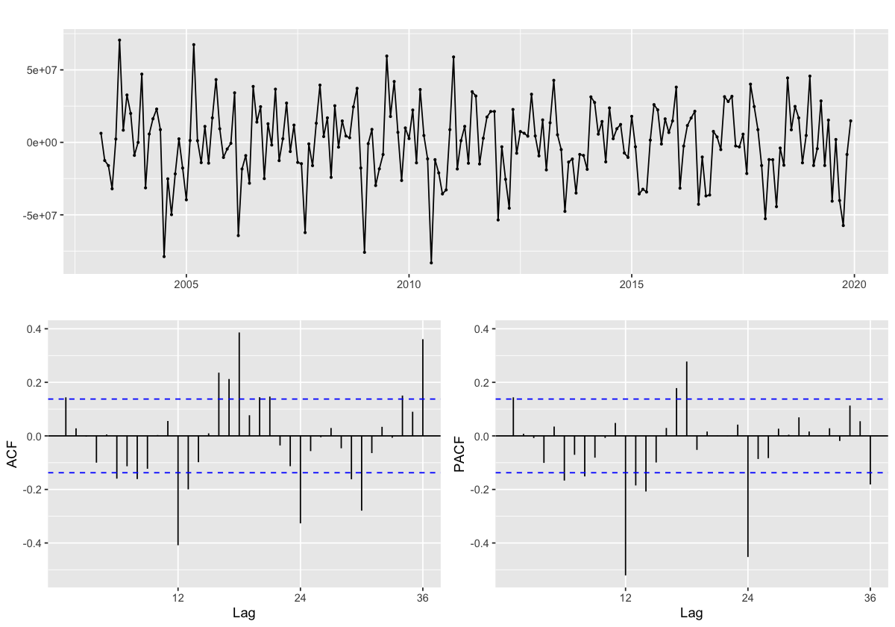

par(bg ="white")ts_bus_passengers <-read_csv('./data/ts_bus_passengers.csv')ts_bus_passengers <-ts(ts_bus_passengers$x,star=decimal_date(as.Date("2002-01-01",format ="%Y-%m-%d")),frequency =12)acf(ts_bus_passengers, lags =60, main="ACF Plot for Bus Passengers - Pre Covid Analysis")
Rows: 216 Columns: 1
-- Column specification --------------------------------------------------------
Delimiter: ","
dbl (1): x
i Use `spec()` to retrieve the full column specification for this data.
i Specify the column types or set `show_col_types = FALSE` to quiet this message.
Warning message in plot.window(...):
""lags" is not a graphical parameter"
Warning message in plot.xy(xy, type, ...):
""lags" is not a graphical parameter"
Warning message in axis(side = side, at = at, labels = labels, ...):
""lags" is not a graphical parameter"
Warning message in axis(side = side, at = at, labels = labels, ...):
""lags" is not a graphical parameter"
Warning message in box(...):
""lags" is not a graphical parameter"
Warning message in title(...):
""lags" is not a graphical parameter"
par(bg ="white")ts_bus_passengers %>%diff(lag=12) %>%diff() %>%ggtsdisplay() # do both

par(bg ="white")SARIMA.c =function(p1,p2,q1,q2,P1,P2,Q1,Q2,data){ temp <-c() d <-1 D <-1 s <-12 i <-1 temp <-data.frame() ls <-matrix(rep(NA,9*35),nrow=35)for (p in p1:p2) {for(q in q1:q2) {for(P in P1:P2) {for(Q in Q1:Q2) {if(p+d+q+P+D+Q<=12) { model<-Arima(data,order=c(p-1,d,q-1),seasonal=c(P-1,D,Q-1)) ls[i,] <-c(p-1,d,q-1,P-1,D,Q-1,model$aic,model$bic,model$aicc) i <- i+1#print(i) } } } } } temp <-as.data.frame(ls)names(temp) <-c("p","d","q","P","D","Q","AIC","BIC","AICc") temp# knitr::kable(temp)}output <-SARIMA.c(p1=1,p2=2,q1=1,q2=2,P1=1,P2=2,Q1=1,Q2=2,data = ts_bus_passengers)
Rows: 216 Columns: 2
-- Column specification --------------------------------------------------------
Delimiter: ","
dbl (1): Value
date (1): DATE
i Use `spec()` to retrieve the full column specification for this data.
i Specify the column types or set `show_col_types = FALSE` to quiet this message.
Rows: 233 Columns: 2
-- Column specification --------------------------------------------------------
Delimiter: ","
dbl (1): adjusted
date (1): date
i Use `spec()` to retrieve the full column specification for this data.
i Specify the column types or set `show_col_types = FALSE` to quiet this message.